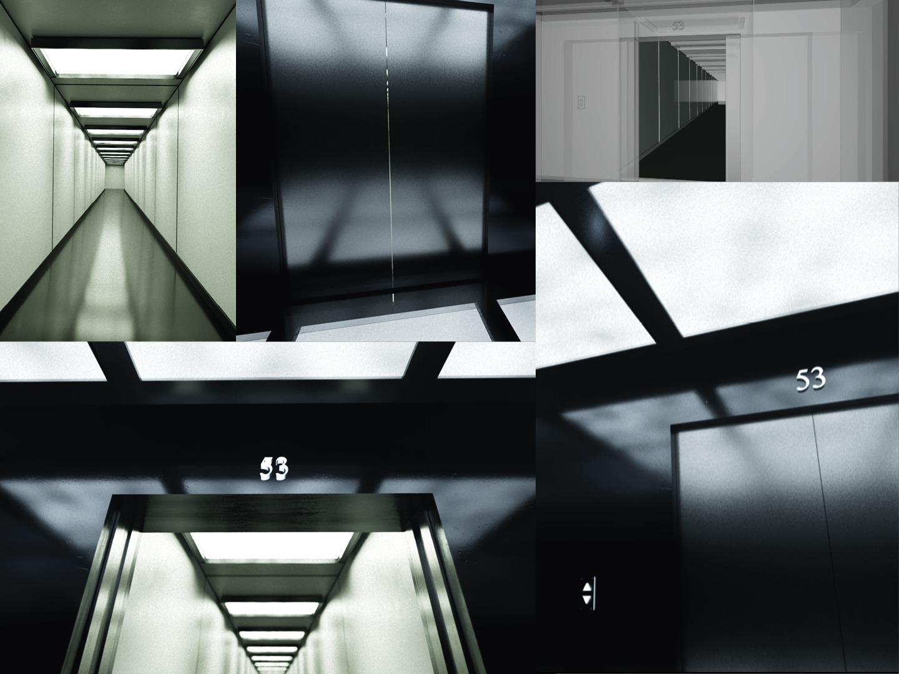

PROJET 05 / 07
Couloir 53
Couloir 53 est un projet personnel réalisé dans le cadre d’un documentaire en cours d’écriture. Il s’agit d’une courte mise en scène en CGI.
Un homme enquête sur les origines allemandes de son grand-père, qui lui ont été cachées toute sa vie. Il part donc à la recherche d’indices à travers le centre des Archives nationales, notamment à l’étage 53.
Inspiré par les liminal spaces et la série Severance, la direction artistique s’oriente vers une atmosphère sobre et dérangeante, appuyée par le sound design et la colorimétrie.
Découvrir les autres projets →